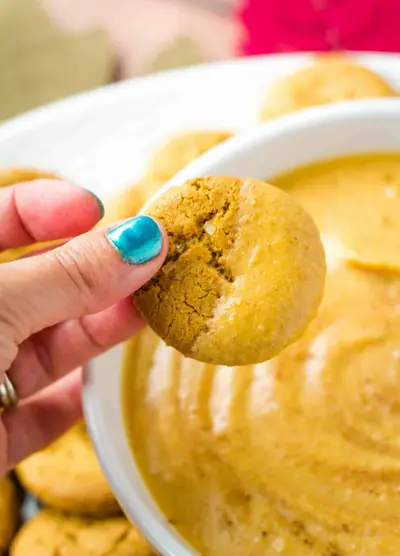

Vegan Pumpkin Dip

Ingredients
- 14 oz coconut milk (remove cream from the top of the can)
- 1 cup pumpkin puree
- 1/4 cup maple syrup
- 1 tbsp pumpkin pie spice
- 1 box vegan ginger snap cookies
Steps
- Skim the coconut cream off the top of the can. Dispose of the water that has fallen to the bottom.
- Combine coconut cream, pumpkin puree, maple syrup, and pumpkin pie spice in a mixing bowl. Stir to combine.
- Use a hand mixer to whip the ingredients together until they create a light and fluffy texture, about 1-2 minutes. Refrigerate for 30 minutes to an hour. Dip will thicken as it cools.
Recipe by Anjali Shah, from The Picky Eater. Saved here for personal use; the original has the full notes, tips and photos. Open original